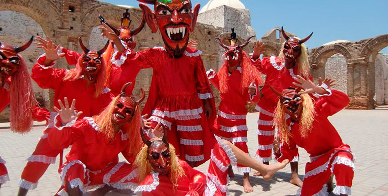

Danzas Principales del Perú

- Es la danza nacional del Perú.
- Representa un cortejo romántico lleno de elegancia y coquetería. Se baila en parejas usando pañuelos que simbolizan la conquista del amor.
- Alegre y suave, con movimientos delicados y pasos marcados.
- De raíces afroperuanas, es una danza enérgica y vibrante.
- Celebra la cultura afrodescendiente con ritmos intensos y movimientos sensuales y festivos.
- Rápido, con percusión dominante y mucha improvisación.
- Originario del norte de la costa peruana.
- Narra historias de amor y desamor con música y baile, combinando influencias españolas y africanas.
- Rítmico y festivo, con movimientos que alternan entre melancólicos y alegres.